product / ui-ux designer · builds & ships
Patchy networks, mobile money, multilingual users, people on cheap phones — the conditions that break templated design. I work in Figma and ship live on Vercel, so what I show you actually runs. My proof comes from the Kenyan market; the thinking carries to any product with real-world constraints.
selected work
A field-service dispatch tool built to a single target: cut response time from four hours to forty-five minutes. Smart assignment, traffic-aware ETAs, and a vehicle-weight rule that stops a motorbike being sent to carry a transformer.
An offline-first record-keeping app that turns a month of paper notes into one number a small-farm owner can act on: are you making money per egg? Built fully offline, with a bilingual interface most apps in this space skip.
A conversion redesign of a real coaching site — taking a cluttered wall of text that confused the very clients it was trying to win, and rebuilding it into a clear, trust-first funnel with a low-friction first step. Before and after both live.
Have a role, a project, or just a question in mind? Fill in the form and it comes straight to me — I usually reply within a day.
about
Product designer and frontend builder. I came up through graphic design, and moved fully into UI/UX at the start of 2026 — because I wanted to design the whole product, not just the surface, and prove it by building it. I design in Figma and ship live on Vercel.
I'm drawn to design problems with hard edges — where a flaky network, a cheap phone, an unfamiliar payment habit, or a user who reads a different language is the thing that decides whether a product works at all. Those constraints aren't only an African story; they're where design gets stress-tested, and the skills transfer to any market that takes its users seriously.
My background is graphic design, which I did through 2025. In January 2026 I moved into UI/UX and started shipping full interfaces rather than static mockups — partly because building closes the gap between what I can imagine and what I can actually prove works. The three projects here are where I've put that into practice.
I'm honest about where these stand: they're live, working prototypes, not products with millions of users behind them. What I can show you is the thinking, the build, and — where I had it — real feedback from the people they're for.
Tools & skills
case study 01 — logistics & mobile workforce
Field-service companies — electricians, plumbers, HVAC, cleaners — live or die on one number: how long between a customer's call and a worker on site. VoltSync is a dispatch tool built around that number, for two very different users: a manager at a desk and a technician on a motorbike in Nairobi traffic. It started as a self-set product brief; the target was to take a four-hour response time down to forty-five minutes.
Before designing a screen, I looked at how small field-service firms in Nairobi actually run dispatch. The honest answer is: a manager pings a WhatsApp group, waits for someone to say "I'm free," and assigns by gut — "David's usually near Westlands." There's no live location, no record of who's holding which parts, and sign-off is a paper job card that slows down the next call. Generic tools don't fill the gap: a calendar doesn't know a van from a boda, and a spreadsheet doesn't rank by who's closest right now.
So VoltSync isn't competing with enterprise dispatch software these firms would never buy. It's replacing the WhatsApp-and-memory workflow with something that still feels that lightweight but actually models location, skills, parts, and vehicles.
These are design parameters and a target, not production results. The number I can't honestly show is the real, measured response time after deployment — that needs a pilot with one contractor and a stopwatch, and it's the first thing I'd run.
Real screens — open the prototype to try both the manager and technician sides.
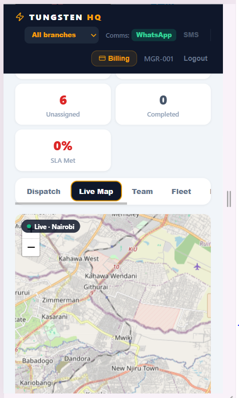
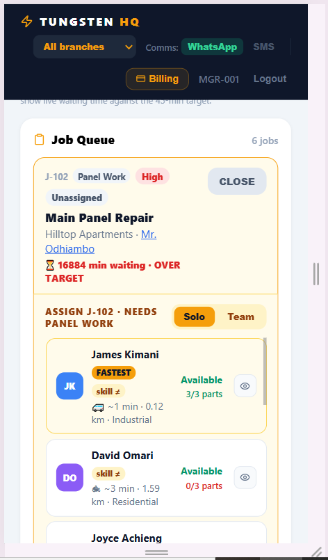
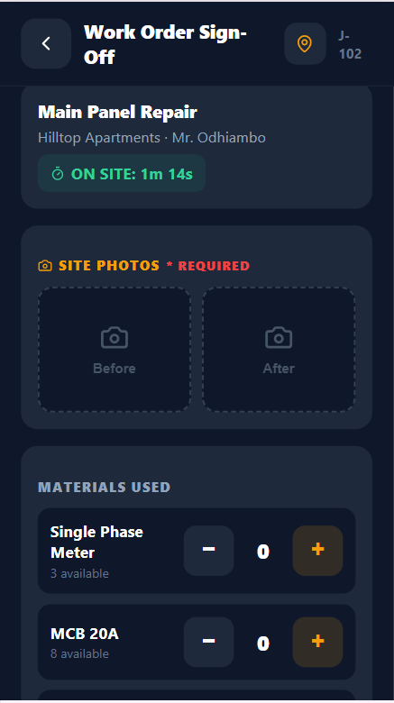
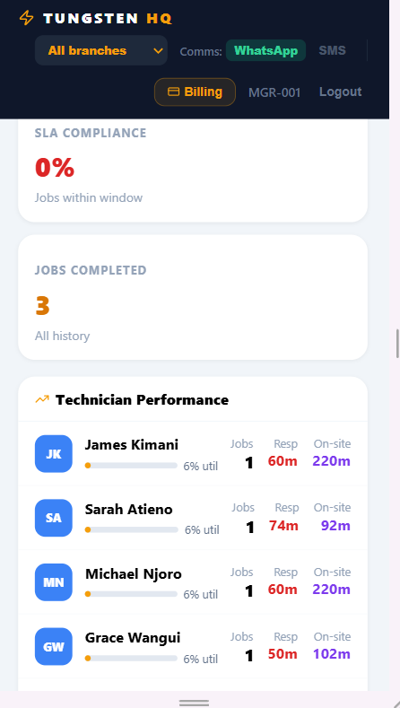
I wrote myself a tight brief: include a live map, ranked assignment, ETA and arrival alerts, a technician mobile flow, time-tracking, and per-vehicle parts. Explicitly leave out a customer booking portal, invoicing, social, and marketing. Holding that line was half the job — every cut feature was a thing I wanted to design but that wouldn't move the response-time number. The only money in the app is the contractor's own subscription; it never touches customer billing.
A motorbike is faster through Nairobi traffic but can't carry a three-phase meter. So every part has a real weight, and a boda is blocked outright from jobs over 12 kg — not warned, blocked. I tried a warning first and then took it out: under pressure, a manager clicks past warnings. The fastest worker isn't always the right one, and the system has to refuse the wrong call instead of leaving it to a busy human.
The technician side is a single forward path: see your queue, start, navigate, tell the customer you're coming, arrive, check parts, sign off. No menu to think about while you're standing next to a live board. One thing I got wrong here: my first build ran the on-site timer on a tick counter, so it froze the second a technician switched to Google Maps — which they do on every job. I rebuilt it on real timestamps. If that clock is wrong, the headline response-time number is wrong, so it simply had to hold.
This is a per-seat subscription: the contractor pays a monthly fee per technician, billed through M-Pesa because that's how a Nairobi business pays for anything. The wedge is the response-time number itself — a contractor sees the value inside the first week of jobs, which is what makes a small operator willing to pay at all. Acquisition is unglamorous and direct: outreach to contractors and word of mouth inside a trade where everyone knows everyone. The churn risk is honest and specific — if the dashboard doesn't visibly move that number early, they'll drift back to WhatsApp, so onboarding has to surface a win fast. I'm flagging this as design-stage reasoning, not a validated model.
Customer messages fire at a single simulated hook, sign-in is client-side, and data lives on the device. To make it real I'd wire that hook to WhatsApp's Cloud API or Africa's Talking, move auth and records server-side, and keep an offline queue in front so a dropped signal never loses a completion. Then the pilot: one contractor, a month, a stopwatch, and the override rate — if managers constantly override the ranking, the ranking is wrong and that tells me exactly what to fix.
case study 02 — offline-first agri-tech
Small-scale layer farmers near me run real businesses out of paper notebooks — eggs collected here, sales there, who-owes-what somewhere else. Ask any of them a simple question, "did you make money this month?", and they can't answer without an hour and a calculator. I built an app that does that maths quietly in the background, works with no internet at all, and runs in Kiswahili as well as English.
This started as something I kept noticing, not a brief. Farmers around me write everything by hand, in separate books, and two things go wrong because of it. You can't trace a year back through scattered notebooks, so nobody really knows their own trend — is feed creeping up, is mortality rising? And credit given to kiosks gets muddled or forgotten, and when it goes wrong the farmer blames themselves rather than the system that lost the record. People were running on memory, and memory is where the money leaks out.
So I stopped thinking "farm app" and started thinking "a simple logbook that quietly answers one question." Because the farms sit where there's weak signal and regular power cuts, working fully offline wasn't a feature to add later — it was the first requirement.
This was informal: I sat with three layer farmers near me and watched them use the working prototype. Not a controlled study, but enough to tell me which parts actually mattered to them.
"Now I can record on my phone — and finally see who my regular buyers are, so I can thank them with a small token."
— farmer 1 · on tracking repeat customers
"Other apps I couldn't follow because of the language. In Kiswahili, I record every single day."
— farmer 2 · on the bilingual interface
"The alerts remind me about the vaccines now. I'm putting everything in by name, slowly, slowly."
— farmer 3 · on the vaccination reminders
The honest gap: I don't yet know if those three came back and used it a second week. First reactions are easy to win; the habit is the real test. Weekly repeat usage is the metric I'd track before I claimed this works — feed figures from public Kenyan agricultural reporting.
Real screens from the working app — open it with the link above.
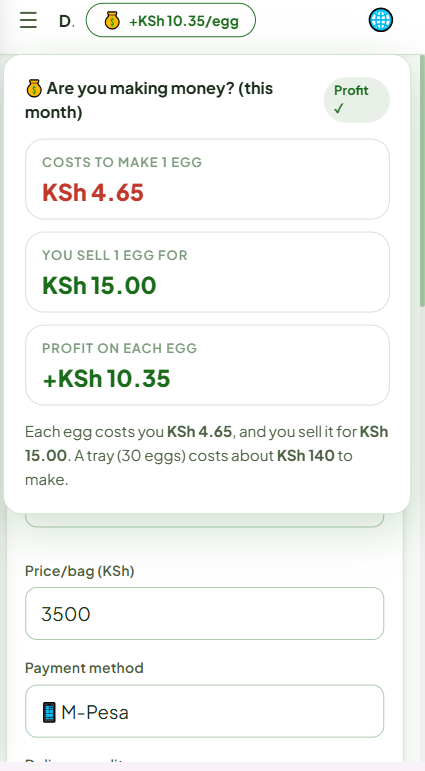
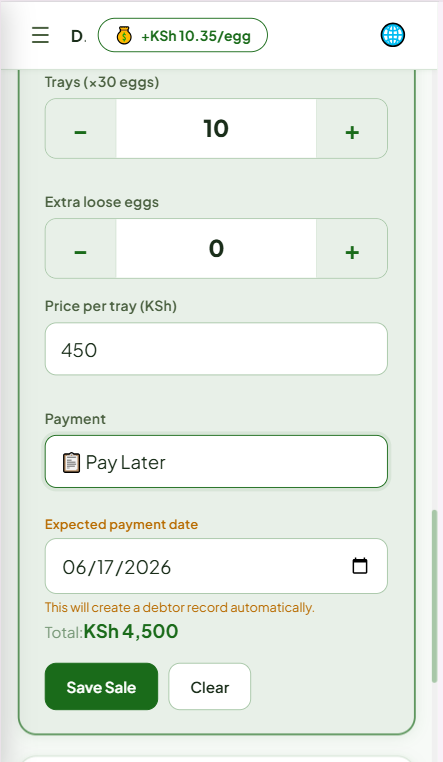
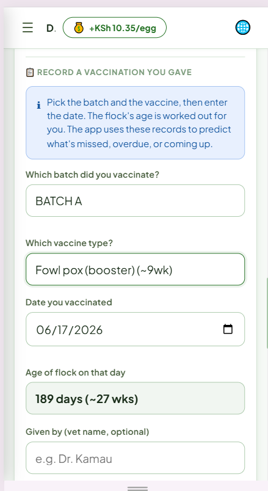
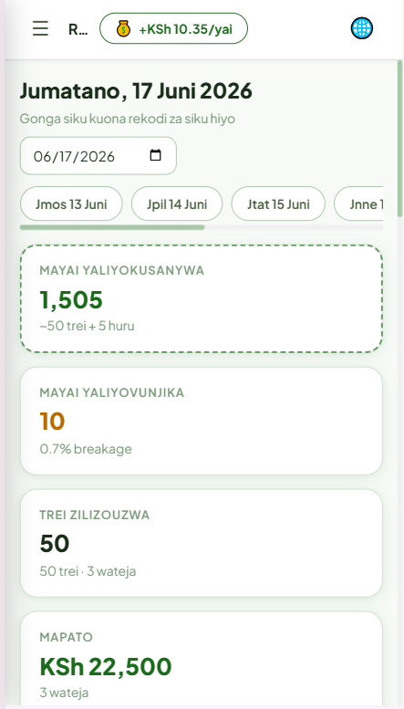
I built a full profit-and-loss view first. It was useless — it speaks a language farmers don't read. So I threw it out and kept a single line: what it costs to make an egg, against what you sell it for, in green or red. It talks in eggs, not "gross margin," because eggs are the thing a farmer handles every day. The styling took an afternoon; deciding that cost-per-egg deserved the whole home screen was the actual design work.
Farmers sell to kiosks on credit and get paid later, so "pay later" sits right next to cash and M-Pesa. Pick it, and a customer field appears and a debtor record is created automatically — the farmer never keeps a separate "who owes me" list that drifts out of sync with their sales. This is also the bit farmer 1 reacted to first: once the regular buyers are visible, you can actually choose to look after them.
Bilingual support is easy to fake and hard to do properly. Here it's a property of every piece of text — form errors, the report a farmer sends a vet, all of it — so nothing quietly drops back to English in the middle of a task. That's exactly what farmer 2 was describing: another app lost him at the first English error message, and this one didn't, so he kept going.
Three first-time reactions are a start, not proof. The thing I genuinely don't know is retention — did any of them come back the next week without me sitting beside them? That's the number I'd chase first. After that, the path from prototype to product is concrete: a cloud sync so a lost phone restores itself and a spouse can log on a second device; an SMS or USSD companion for workers on feature phones; and a shareable farm record that could unlock better input prices or a SACCO loan. Record-keeping alone won't keep anyone; access to money will. The prototype earns the habit — the business is in what the records unlock.
case study 03 — conversion & payments redesign
A Kenyan weight-loss coach with genuinely good results had them buried in a long, cluttered page. I clicked through from her Instagram link the way a real client would, and I got lost — I couldn't tell what to read first or find the price. For a coach charging premium fees, the site read cheaper than the service. I rebuilt it into a clear, trust-first funnel that pays the way Kenyans actually pay.
This is a real coach with a real offer — the writing was even persuasive. But everything sat at the same visual weight on one endless scroll, so nothing landed and the price was nowhere obvious. My job wasn't to rewrite her story; it was to give that story an order a nervous first-time visitor could follow without getting lost, and to make the site feel as premium as the programme it sells.
Worth being straight about: this is a portfolio redesign. I used placeholder imagery in place of the coach's real photos while I worked the UX — the structure, the flow, and the payment design are the real work here, and the before/after are both live so you can judge the change yourself.
Compare with the original at jpnyiha.com using the link above.
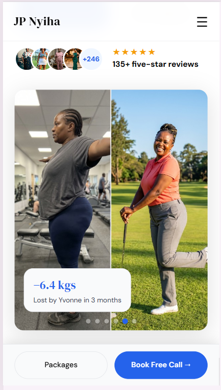
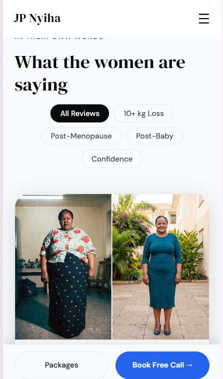
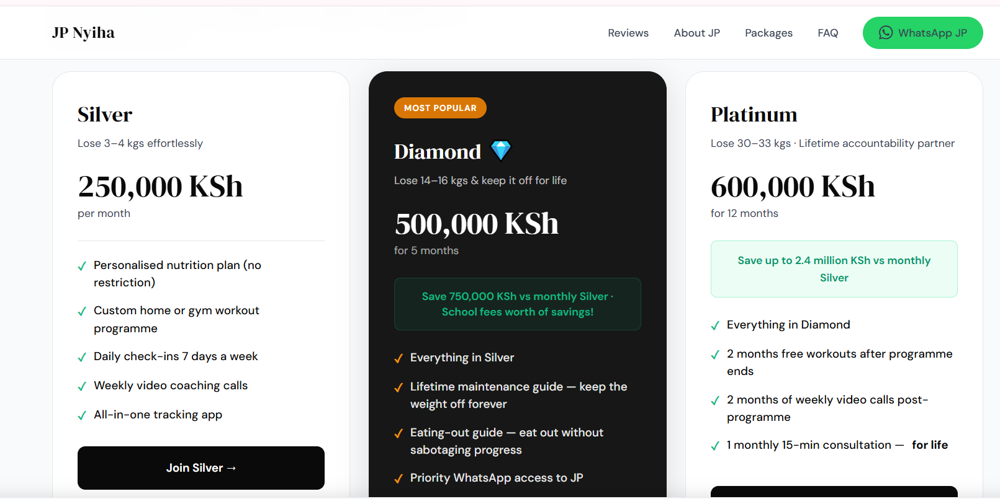
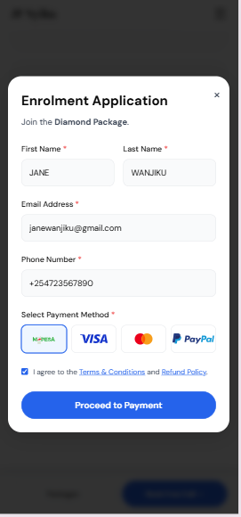
The original showed bio, method, testimonials and price at the same weight, so a visitor couldn't tell where to start. I rebuilt it as a sequence that earns each step: a transformation you can see, then the problem in the visitor's own words, then the method, then proof you can filter, then a clear price ladder, then the common objections answered, then one calm ask. By the time someone reaches the call-to-action, they've already talked themselves into it.
In weight-loss coaching the only question that matters is "will this work for me?" So the hero leads with a named client result, and testimonials can be filtered by life stage — post-baby, menopause, 10+ kg — so a 48-year-old sees women like her, not a generic highlight reel. Qualifications still matter, but they come after the proof, not in front of it.
Asking a stranger to buy a high-ticket programme cold is the wrong ask, so the main action everywhere is a free discovery call via Calendly — talk to the coach, then enrol. And when someone does pay, the flow leads with M-Pesa, then card via Paystack, then PayPal for diaspora clients, with the form adapting to the choice. Most "reduce checkout friction" advice ignores that the friction here is offering the wrong payment method first.
Conversion design slides into manipulation easily, so I kept the persuasion to things that are true and left out fake countdowns and invented scarcity. A page should make a real offer easy to say yes to, not trick someone. On the build itself: the Calendly booking is live, Paystack runs in test mode, and the M-Pesa and PayPal steps are simulated at the final screen. To ship, M-Pesa wires to the Daraja STK API and cards move to live keys — then I instrument the funnel and let the data, not me, claim the lift.
résumé / cv
Product / UI-UX Designer
winnerkanjas@gmail.com · +254 704 863
277
linkedin.com/in/winner-kanja · behance.net/winnerkanja · winner-kanja.vercel.app
Summary
Product designer and frontend builder who ships live, working prototypes — not static mockups. I design for hard real-world constraints (flaky networks, mobile money, multilingual users, low-end devices) and build them in React on Vercel. Came up through graphic design and moved fully into UI/UX in early 2026.
Experience
Self-employed
Freelance — various clients
Selected Projects
VoltSync Dispatch (live prototype) — field-service dispatch tool built to one target: cut response time from 4 hours to 45 minutes. Smart assignment, traffic-aware ETAs, and a vehicle weight-rule that blocks a motorbike from jobs it can't carry.
Kuku Farm Manager (live prototype) — offline-first, bilingual record-keeping for layer farmers that turns a month of paper notes into one number: cost vs. price per egg. Validated with hands-on feedback from three farmers.
Jape Fitness (live redesign) — conversion redesign of a real coaching site: a cluttered wall of text rebuilt into a clear, trust-first funnel with a free-call front door and an M-Pesa-first checkout.
Skills
Tools
Learning
Links